Guide 2026 · TPE, PME & ArtisansGuide gratuit · Protection des données & IA pour TPE et PME
ChatGPT, Claude, Copilot, Gemini : vos collaborateurs les utilisent probablement déjà. La vraie question n'est plus de savoir s'il faut utiliser l'IA, mais comment l'utiliser sans perdre le contrôle des données de votre entreprise.
Mode d'emploi
Pas de jargon technique : un diagnostic concret pour savoir où en est votre entreprise, et un plan d'action pour progresser sans bloquer l'utilisation de l'IA.
7 erreurs reviennent dans la quasi-totalité des entreprises qui utilisent l'IA sans cadre. Identifiez celles qui vous concernent déjà.
10 questions, 2 minutes, un score sur 20 pour situer précisément votre niveau de maîtrise actuel.
Toutes les données ne demandent pas le même niveau de protection. Identifiez quelle IA convient à quelle donnée.
Un calendrier en 30/60/90 jours pour passer d'un usage individuel et parfois invisible de l'IA à un usage utile, maîtrisé et gouverné.
Les erreurs à éviter
Le premier risque pour l'entreprise n'est pas nécessairement l'IA elle-même. C'est l'IA utilisée sans cadre.
Contrats, données clients, éléments financiers ou informations stratégiques peuvent être transmis sans réelle réflexion sur leur sensibilité.
Le collaborateur veut résumer trois pages et téléverse un document de 80 pages contenant des informations inutiles à la tâche.
L'entreprise ne maîtrise alors ni les comptes utilisés, ni leur configuration, ni les départs des collaborateurs.
Extensions, assistants, applications SaaS et agents peuvent accéder à des données ou services de l'entreprise sans validation.
Une information publique et un fichier contenant les marges par client ne doivent pas être traités de la même manière.
Le contrat et l'architecture comptent, mais ils ne remplacent pas les règles internes et la gouvernance.
Sans règles simples, chacun invente les siennes. Bonne nouvelle : ces risques peuvent être fortement réduits sans interdire l'IA.
Auto-diagnostic
10 questions · 2 minutes · 20 points maximum. 2 points = Oui · 1 point = Partiellement / Je ne sais pas précisément · 0 point = Non.
| # | Question | Score |
|---|---|---|
| 1 | Savez-vous quelles IA sont utilisées dans votre entreprise ? | __ / 2 |
| 2 | Disposez-vous d'une liste des outils IA autorisés ? | __ / 2 |
| 3 | Vos collaborateurs savent-ils quelles données ils peuvent transmettre à une IA ? | __ / 2 |
| 4 | Disposez-vous d'une charte ou de règles d'utilisation de l'IA ? | __ / 2 |
| 5 | Avez-vous vérifié les conditions de traitement des données des principaux outils utilisés ? | __ / 2 |
| 6 | Les comptes IA professionnels sont-ils administrés par l'entreprise ? | __ / 2 |
| 7 | Savez-vous si des données clients sont actuellement envoyées à des IA ? | __ / 2 |
| 8 | Avez-vous défini des règles concernant les données RH, financières et stratégiques ? | __ / 2 |
| 9 | Avez-vous identifié les données les plus critiques de votre entreprise ? | __ / 2 |
| 10 | Un nouvel outil IA est-il évalué avant d'être utilisé avec des données de l'entreprise ? | __ / 2 |
Votre score : ____ / 20 — reportez-vous à la zone correspondante ci-dessous.
Comprendre
Il n'existe pas une seule manière d'utiliser l'IA. Avant d'autoriser un usage professionnel, l'entreprise doit pouvoir répondre à quelques questions simples.
L'objectif n'est pas de classer les outils en deux catégories — « sûr » ou « dangereux ». Il est d'adapter le niveau de protection à la sensibilité des données et à l'usage.
Architecture
Toutes vos données ne nécessitent pas le même niveau de protection.
Classification
Plus une donnée est sensible, plus l'environnement IA doit être maîtrisé.
| Données | Exemple | Vigilance |
|---|---|---|
| Publiques | Site internet, catalogue public | Faible |
| Internes | Procédures, comptes rendus | Modérée |
| Confidentielles | Contrats, données clients, tarifs négociés | Élevée |
| Critiques | R&D, stratégie, secrets d'affaires | Très élevée |
La bonne architecture est celle qui trouve, pour chaque usage, le niveau de maîtrise adapté à la donnée.
Et après ce guide ?
Passer d'un usage individuel et parfois invisible de l'IA à un usage utile, maîtrisé et gouverné.
Quels outils, par qui, pour quelles tâches, avec quelles données ? Identifier les données critiques : clients, RH, finance, contrats, propriété intellectuelle, stratégie.
Choisir les outils autorisés, créer une charte IA simple, définir ce qui peut et ne peut pas être transmis à une IA, sensibiliser les collaborateurs.
Identifier les usages à forte valeur, choisir les architectures adaptées, mettre en place les accès et contrôles nécessaires, former les équipes.
Checklist
Si plusieurs cases restent vides, votre priorité n'est probablement pas d'ajouter de nouveaux outils IA. C'est de reprendre le contrôle de ceux qui sont déjà utilisés.
En 30 minutes, nous identifions avec vous vos principaux usages IA, vos zones de risque, et les trois actions à traiter en priorité.
Réserver mon diagnostic IA